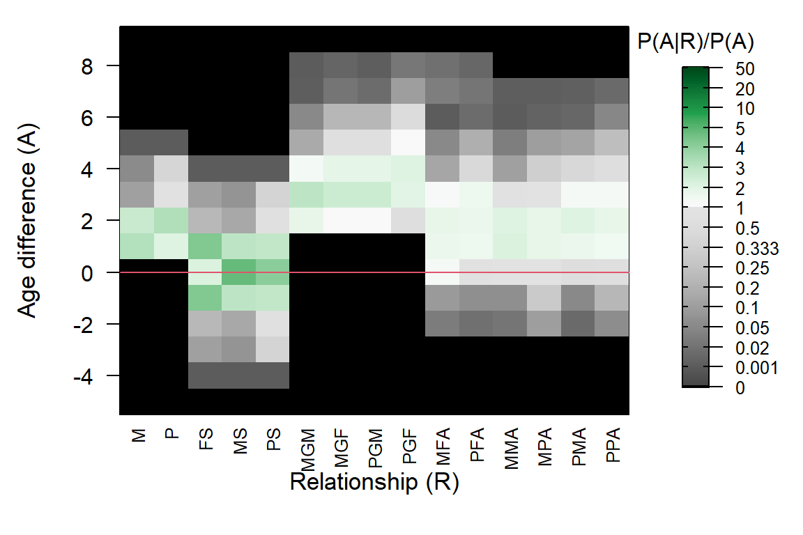

3 AgePrior matrix explained
The ageprior matrix has 5 columns (more in sequoia versions before 2.0), corresponding to parent-offspring and sibling pairs (abbreviations in Table 3.1). The number of rows equals at least the maximum age of parents (MaxAgeParent) plus one: the first row is for individuals born in the same year (age difference \(A=0\)), the second row for individuals born one year apart, etc (indicated by the rownames).
MakeAgePrior(Pedigree = Ped_griffin, Smooth=FALSE, Flatten=FALSE) # Note: Ped_griffin includes a birth year column## Ageprior: Pedigree-based, overlapping generations, MaxAgeParent = 3,3## M P FS MS PS
## 0 0.000 0.000 5.043 4.316 3.862
## 1 3.476 1.967 2.798 2.636 2.971
## 2 2.011 3.167 0.077 0.691 0.583
## 3 0.340 0.959 0.000 0.000 0.000
## 4 0.000 0.000 0.000 0.000 0.000A value of \(0\) (black squares in the plot) indicates that an age difference / relationship combination is impossible; in the example here this is the case for among others mother-offspring pairs (M, first column) and age differences of 0 and 4. Any age differences not in this matrix (i.e. >4 years) are considered impossible (\(0\)) for all five relationships. Values greater than \(1\) (green) indicate a relationship is more likely for that age difference than for a random pair, while values below \(1\) (grey) indicate the relationship is less likely.
| Column (R) | Meaning | Version |
|---|---|---|
| M | Mother - offspring | all |
| P | Father - offspring | all |
| FS | Full siblings | from 1.0 |
| MS | Maternal siblings (full + half) | all |
| PS | Paternal siblings (full + half) | all |
| MGM | Maternal grandmother | up to 1.3 * |
| PGF | Paternal grandfather | up to 1.3 * |
| MGF | Maternal grandfather (+ paternal grandmother) | up to 1.3 * |
| UA | avuncular (niece/nephew – aunt/uncle, full + half) | up to 1.3 |
| (M/P)(M/P/F)A | Avuncular; Mother’s/Father’s Maternal/Paternal/Full sibling | from 2.0 * |
3.1 AgePriorExtra
The agepriors for grand-parental en avuncular pairs are calculated from the agepriors for parent-offspring and sibling relationships (details in section Grandparents & Avuncular). These extra columns are not calculated by MakeAgePrior(), but by sequoia() just prior to parentage assignment and prior to full pedigree reconstruction (see pipeline in Figure 1.2).
# sequoia() output for the griffin data is included in the package:
# see ?SeqOUT_griffin on how it was generated
round(SeqOUT_griffin$AgePriorExtra, 2)## M P FS MS PS MGM MGF MFA MMA MPA PGM PGF PFA PMA PPA
## -5 0.00 0.00 0.00 0.00 0.00 0.00 0.00 0.00 0.00 0.00 0.00 0.00 0.00 0.00 0.00
## -4 0.00 0.00 0.00 0.00 0.00 0.00 0.00 0.00 0.00 0.00 0.00 0.00 0.00 0.00 0.00
## -3 0.00 0.00 0.11 0.08 0.37 0.00 0.00 0.00 0.00 0.00 0.00 0.00 0.00 0.00 0.00
## -2 0.00 0.00 0.22 0.16 0.74 0.00 0.00 0.03 0.02 0.10 0.00 0.00 0.02 0.01 0.06
## -1 0.00 0.00 4.29 2.92 2.81 0.00 0.00 0.09 0.07 0.29 0.00 0.00 0.07 0.05 0.22
## 0 0.00 0.00 2.19 4.77 4.01 0.00 0.00 1.27 0.91 0.96 0.00 0.00 0.78 0.56 0.68
## 1 3.16 2.02 4.29 2.92 2.81 0.00 0.00 1.67 2.15 1.78 0.00 0.00 1.56 1.68 1.46
## 2 2.66 3.28 0.22 0.16 0.74 1.74 1.02 1.79 2.10 1.75 1.02 0.60 1.62 2.07 1.73
## 3 0.11 0.81 0.11 0.08 0.37 2.94 2.52 1.15 0.84 0.92 2.52 1.95 1.51 1.29 1.22
## 4 0.06 0.41 0.00 0.00 0.00 1.36 1.84 0.14 0.12 0.32 1.85 2.06 0.45 0.43 0.57
## 5 0.00 0.00 0.00 0.00 0.00 0.16 0.63 0.05 0.04 0.11 0.63 1.02 0.19 0.14 0.24
## 6 0.00 0.00 0.00 0.00 0.00 0.05 0.22 0.00 0.00 0.01 0.22 0.49 0.02 0.01 0.05
## 7 0.00 0.00 0.00 0.00 0.00 0.00 0.02 0.04 0.00 0.00 0.01 0.10 0.03 0.00 0.01
## 8 0.00 0.00 0.00 0.00 0.00 0.00 0.01 0.02 0.00 0.00 0.00 0.03 0.01 0.00 0.00
## 9 0.00 0.00 0.00 0.00 0.00 0.00 0.00 0.00 0.00 0.00 0.00 0.00 0.00 0.00 0.00
## 10 0.00 0.00 0.00 0.00 0.00 0.00 0.00 0.00 0.00 0.00 0.00 0.00 0.00 0.00 0.00PlotAgePrior(SeqOUT_griffin$AgePriorExtra)
The ageprior for avuncular pairs is complicated: aunts and uncles are often older than their nieces/nephews, but may also be younger, and the distribution is not necessarily symmetrical around zero. To accommodate this, age differences in AgePriorExtra are no longer absolute age differences, but do go negative. Parents and grandparents must always be older than their (grand-)offspring, and the distribution for siblings is always strictly symmetrical.